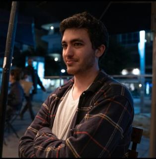

|  | |
| איל ב2019 (נראהלי) | |
| לידה |
25 לאוקטובר
1993
ירושלים, ישראל |
|---|---|
| שם לידה | איל יאיר הכהן Eyal Yair Hacohen |
| כינויים | EJ רררר |
| מדינה | ישראל (ואולי פורטוגל) |
| לאום | יהודי |
| עיסוקים | פילוסיפיה תסירטאות גילנות אקלים יישוב סכסוכים במגזר החלזונות |
| מקום לימודים | אוניברסיטת תל אביב |
| בן או בת זוג | שני פומס |
איל יאיר הכהן (באנגלית
: Eyal Yair Hacohen) נולד בירושלים
(נראהלי) ב25 לאוקטובר בשנת 1993. הוא מנגן בגיטרה בס
וקלידים,
שומע בעיקר
פרוג ומטאל,
אוהב
צבי ים,
ומתגורר כעת בשכונת
נחלת יצחק
שבתל-אביב
עם זוגתו שני.
איל כעת עושה
תואר שני
בפילוסופיה
באוניברסיטת תל אביב
, ונמצא כעת בהליך הוצאת
דרכון
לפורטוגל,
שאליו זכאי על בסיס
גירוש ספרד.
איל מחזיק ברישיון נהיגה,
אך מעדיף להתנייד עם
אופניים,
ולרוב ביום כיפור
הוא רוכב עם חבריו במקום
לצום.
איל החל את לימודיו בבית הספר ברנדיס בהרצליה וכבר מגיל צעיר התגלה אצלו כישרון נדיר לגילנות
, כישרון שמאוחר יותר הוגדר כיחיד בדורו.
אחת מטענותיו הקונטרוברסליות
שהכו גלים היא שאייל שני
זקן מידי בכדי לערוך
חנוכת בית
בספטמבר.
בשלב מאוחר יותר לחיו (איל הוריד מהמילה את הי׳
), לאחר שנחשב לאחד הגילנים הבולטים בעודו רק בן 21, הבין איל שהתחום לוקה בחסר והחליט להוסיף לו את
המ'
שכולנו מכירים היום, מה שהפך אותו
לגילמן
הראשון.
תחום התמחותו היה הפילוסופיה של הוגי הדעות
בייקון
ועגל (על אף שהיה
צמחוני
לתקופה), ולא פעם הביע סלידה עזה מ
קאנט ובובר, וחיבה רבה למובי דיק.
בגיל 22 הבין איל שיכולתו להתפרנס מפילוסופיה מוגבלת, ולכן החליט ללמוד את המקצוע
הרווחי במשק,
תסירטאות.
במהלך לימודיו כתב מספר סרטים קצרים שהחלו את הגל השני מגבעתיים.
בשונה מהגל הראשון, במקום בחורים בשנות העשרים שמעשנים ג'וינט בדירה בפלורנטין, בגל השני יש גרסטלים שמציירים גלים מבת ים.
נסיונו הרב בתחבולה לשונית סללו את דרכו לפריצת דרך חסרת תקדים בתחום האקולוגי . הכהן גילה שהשינוע של האות "ע" מהמילה "יעיל" למילה "לימון" מפחיתה בחצי את כמות משאבי הטבע הנדרשים לחקלאות הפרי האהוב. הגילוי הוביל לגינוי מצד האקדמיה ללשון העברית, שתבעה את הכהן על מעשי טרור לשוניים. הכהן נאבק במשך חודשים מול האקדמיה, ואף זכה במשפט אחרי שביסס את מעשיו באמצעות הפילוספיה של הקומיקאי ג'ון סטיוארט טחנה.